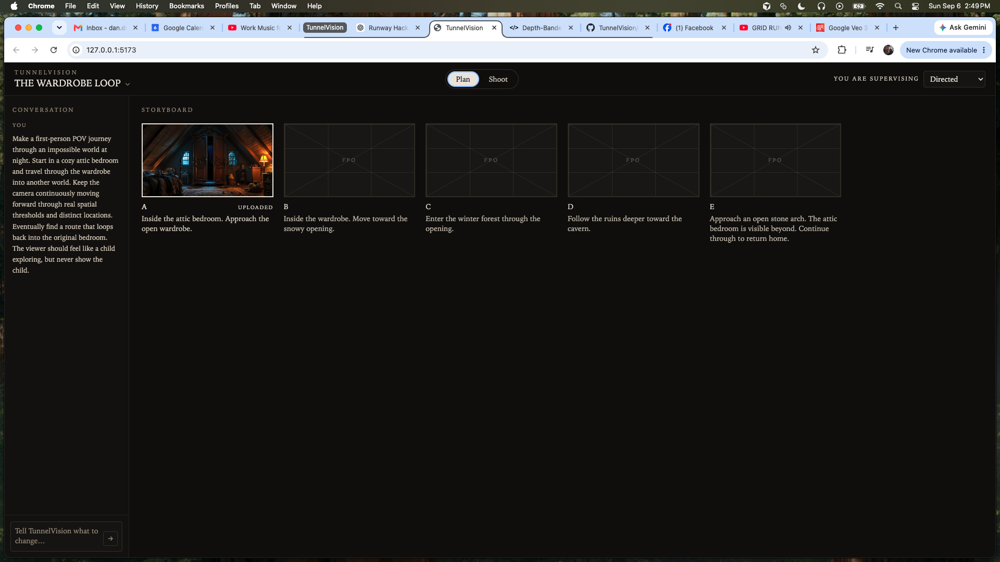
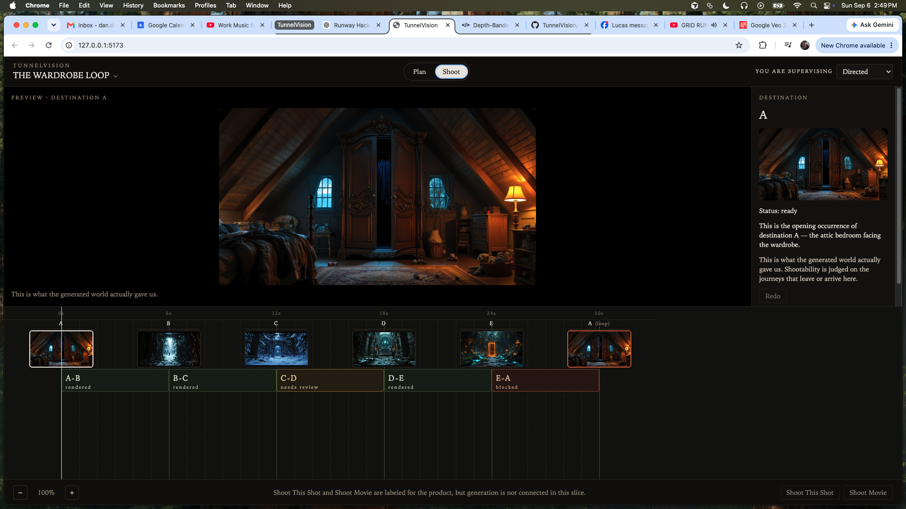

TunnelVision is agentic filmmaking research extending filmmaker Terran Boylan's original TunnelVision technique. This chapter records the second product UI milestone: Plan becomes a conversational storyboard. Shoot remains the Product Slice 1 production workspace. It is not a Camotion experiment. Camotion Phase 1 remains frozen. Product Slice 2 is fixture-driven using the Wardrobe Loop. Generation, chat, and orchestration are not yet connected to the product interface.
Plan expresses filmmaking intent. Shoot records production reality.
Plan is what we intend to make. Shoot is what production actually gave us. Primary product navigation remains Plan | Shoot. There is no Edit workspace.
Conversation is the interaction mechanism. The storyboard is the planning artifact.
The filmmaker talks to TunnelVision in Conversation. The durable Plan state is the storyboard: a spatial grid of intended beats, not a timeline and not a transcript.

Plan — Filmmaker intent enters through Conversation. The storyboard is the structured planning artifact.

Shoot — Actual generated Destinations and Journey evidence on a temporal layout, with review, blocking, and shootability state.
Plan
INTENDED MOVIE
Filmmaker intent enters through Conversation. The static fixture message is a request to TunnelVision, not a project synopsis. The composer is presentational; chat is not wired.
The storyboard is the structured planning artifact. It is a responsive grid of intended beats, not a Destinations/Journey timeline. Uploaded filmmaker imagery can coexist with planned FPO beats. Planned beats may exist before imagery exists. A is an uploaded storyboard frame. B–E are planned beats whose imagery does not exist yet.
Plan represents what we intend to make.
Shoot
PRODUCTION REALITY
Shoot is unchanged from Product Slice 1. It records actual generated Destinations and actual Journey/video evidence on a temporal layout. Review, blocking, and shootability remain route-level production state.
Shoot represents what production actually gave us.
This slice does not generate.
Product Slice 2 is fixture-driven using the Wardrobe Loop. Conversation, uploads, generation, and MAKE MOVIE are not connected. Later UI screenshots should mark conceptual product milestones, not routine polish.